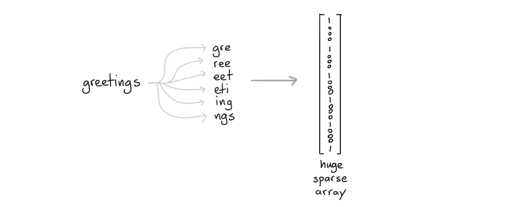
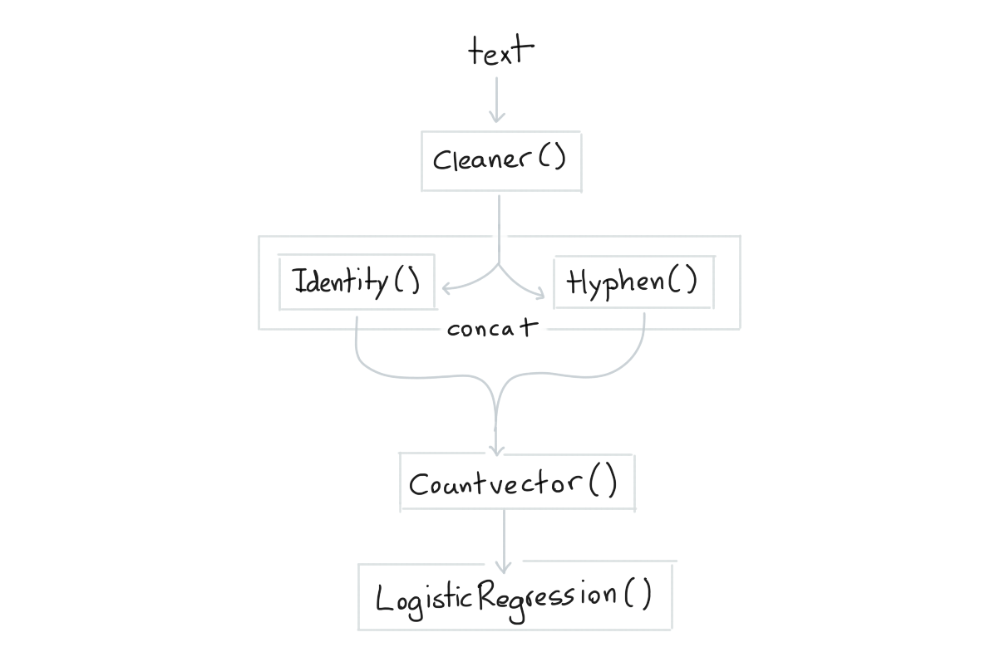

Scikit-Learn
Scikit-Learn pipelines are amazing but they are not perfect for simple text use-cases.
- The standard pipeline does not allow for interactive learning. You can
apply
.fitbut that's it. Even if the tools inside of the pipeline have a.partial_fitavailable, the pipeline doesn't allow it. - The
CountVectorizeris great, but we might need some more text-tricks at our disposal that are specialized towards text to make this object more effective.
Part of what this library does is give more tools that extend scikit-learn for simple text classification problems. In this document we will showcase some of the main features.
Text Preparation Tools¶
Let's first discuss a basic pipeline for text inside of scikit-learn.
Base Pipeline¶
This simplest text classification pipeline in scikit-learn looks like this;

from sklearn.pipeline import make_pipeline
from sklearn.feature_extraction.text import CountVectorizer
from sklearn.linear_model import SGDClassifier
pipe = make_pipeline(
CountVectorizer(),
SGDClassifier()
)
This pipeline will encode words as sparse features before passing them on to the logistic regression model. This pattern is very common and has proven to work well enough for many English text classification tasks.

The nice thing about using a SGDClassifier is that we're able to learn from our data even if the dataset
does not fit in memory. We can call .partial_fit instead of .fit and learn in a more "online" setting.
That said, there are things we can do even to this pipeline to make it better.
Spelling Errors¶
When you are classifying online texts you are often confronted with spelling errors. To deal with this you'd typically use a CountVectorizer with a character-level analyzer such that you also encode subwords.

With all of these subwords around, we'll be more robust against spelling errors.
The downside of this approach is that you might wonder if we really need all these subwords. So how about this,
let's add a step that will turn our text into subwords by splitting up hyphens.
from tokenwiser.textprep import HyphenTextPrep
multi = HyphenTextPrep().transform(["geology", "astrology"])
assert multi == ['geo logy', 'as tro logy']
The HyphenTextPrep preprocessor is a TextPrep-object. For all intents and purposes these are
scikit-learn compatible preprocessing components but they all output strings instead of arrays. What's
nice about these though is that you can "retokenize" the original text. This allows you to use the
subtokens as if they were tokens which might help keep your pipelines lightweight while still keeping
them robust against certain spelling errors.
Long Texts¶
There are some other tricks that you might want to apply for longer texts. Maybe you want to summarise a text before vectorizing it. So maybe it'd be nice to use a transformer that keeps only the most important tokens.
A neat heuristic toolkit for this is yake (you can find a demo here). This package also features a scikit-learn compatible component for it.
from tokenwiser.textprep import YakeTextPrep
text = [
"Sources tell us that Google is acquiring Kaggle, \
a platform that hosts data science and machine learning"
]
example = YakeTextPrep(top_n=3, unique=False).transform(text)
assert example[0] == 'hosts data science acquiring kaggle google is acquiring'
The idea here is to reduce the text down to only the most important words. Again, this trick might keep the algorithm lightweight and this trick will go a lot further than most "stopword"-lists.
Bag of Tricks!¶
The goal of this library is to host a few meaningful tricks that might be helpful. Here's some more;
Cleanerlowercase text remove all non alphanumeric characters.Identityjust keeps the text as is, useful when constructing elaborate pipelines.PhoneticTextPreptranslate text into a phonetic encoding.SpacyPosTextPrepadd part of speech infomation to the text using spaCy.SpacyLemmaTextPreplemmatize the text using spaCy.
All of these tools are part of the textprep submodule and are documented in detail
here.
Pipeline Tools¶
Pipeline components are certainly nice. But maybe we can go a step further for text. Maybe we can make better pipelines for text too!
Concatenate Text¶
In scikit-learn you would use FeatureUnion or make_union to concatenate features in
a pipeline. Ut is assumed that transformers output arrays that need to be concatenated so the
result of a concatenation is always a 2D array. This can be a bit awkward if you're using text preprocessors.

The reason why we want to keep everything a string is so that the CountVectorizer from scikit-learn
can properly encode it. That is why this library comes with a special union
component: TextConcat. It concatenates the output of text-prep tools into a string instead of
an array. Note that we also pack a convenient make_concat function too.
from sklearn.pipeline import make_pipeline
from tokenwiser.pipeline import make_concat
from tokenwiser.textprep import Cleaner, Identity, HyphenTextPrep
pipe = make_pipeline(
Cleaner(),
make_concat(Identity(), HyphenTextPrep()),
)
output = pipe.fit_transform(["hello astrology!!!!"])
assert output == ['hello astrology hel lo astro logy']
Again, we see that we're taking a text input and that we're generating a text output. The make_concat
is making sure that we concatenate strings, not arrays! This is great when we want to follow up with
a `CountVectorizer!
from sklearn.pipeline import make_pipeline
from sklearn.linear_model import LogisticRegression
from sklearn.feature_extraction.text import CountVectorizer
from tokenwiser.pipeline import make_concat
from tokenwiser.textprep import Cleaner, Identity, HyphenTextPrep
pipe = make_pipeline(
Cleaner(),
make_concat(Identity(), HyphenTextPrep()),
CountVectorizer(),
LogisticRegression()
)
The mental picture for pipe-pipeline looks like the diagram below.

Partial Fit¶
We can go a step further though. The scikit-learn pipeline follows the fit/predict API. That
means that we cannot use .partial_fit(). Even if all the components in the pipeline are compatible
with the partial_fit/predict API. That is why this library also introduced components for mini-batch
learning: PartialPipeline and make_partial_pipeline
In these scenarios you will need to swap out the CountVectorizer with a HashVectorizer in order to
be able to learn from new data comming in.
from sklearn.linear_model import SGDClassifier
from sklearn.feature_extraction.text import HashingVectorizer
from tokenwiser.textprep import Cleaner, Identity, HyphenTextPrep
from tokenwiser.pipeline import make_concat, make_partial_pipeline
pipe = make_partial_pipeline(
Cleaner(),
make_concat(Identity(), HyphenTextPrep()),
HashingVectorizer(),
SGDClassifier()
)
This pipe-Pipeline is scikit-learn compatible for all intents and purposes
but it has the option of learning from batches of data via partal_fit. This is great
because it means that you're able to classify text even when it doesn't fit into memory!
Note that all of the
TextPrep-components in this library allow forpartial_fit.